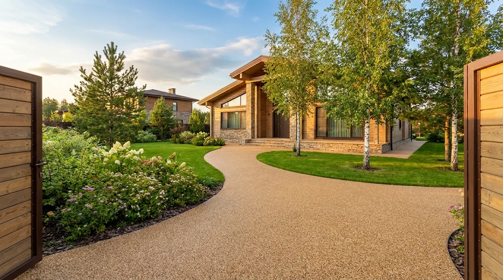
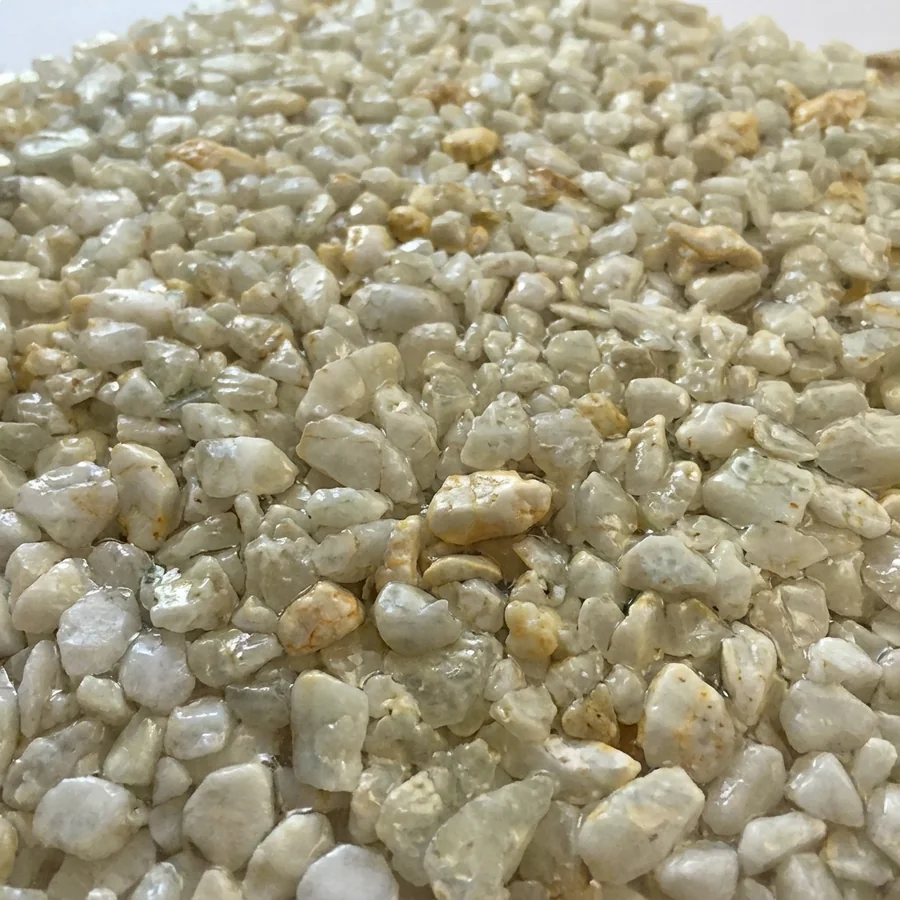
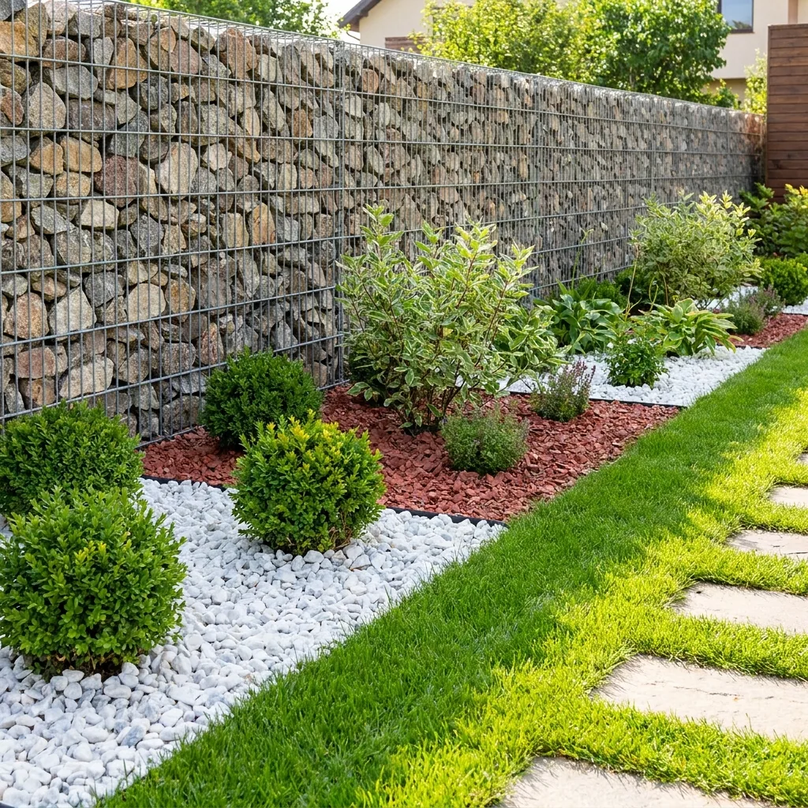
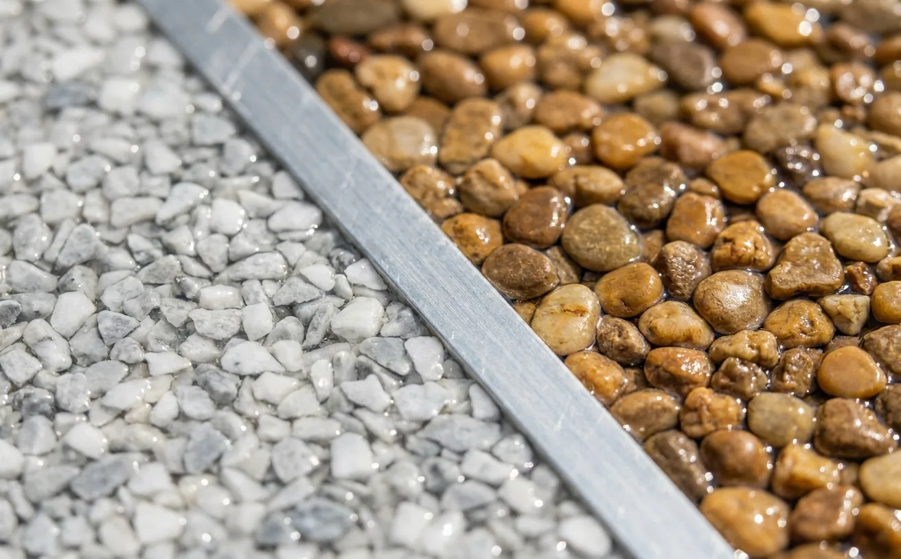

Ландшафт
Крошка для ландшафта
Декоративная каменная крошка для благоустройства территории. Фракции 3-5, 5-10, 10-20, 20-40 и 40-70 мм.
Камни и фракции
14 позиций в прайсе
Златолит жёлтый и чёрный, змеевик салатовый, яшма красная и пейзажная, фельзит жёлтый и полосатик, микс разноцветный, доломит чёрный и серый, диабаз серо-зелёный, мрамор белый, гранит розовый и речная галька. Наличие каждой фракции по конкретному камню уточняйте у менеджера.
Все образцы

Благоустройство
Для территории и сада
Ландшафтную крошку используют для благоустройства территории, отсыпки дорожек, оформления детских площадок, габионов, вазонов, скамеек, флорариумов и засыпки цветов в горшках.
Связаться с менеджером
Фракции
Пять фракций
Ландшафтная крошка выпускается фракциями 3-5 мм, 5-10 мм, 10-20 мм, 20-40 мм и 40-70 мм. Выберите фракцию под задачу или закажите образцы.
Заказать образцыЧто важно при выборе
- Пять фракций — 3-5 мм, 5-10 мм, 10-20 мм, 20-40 мм и 40-70 мм.
- 14 позиций — От речной гальки до доломита и диабаза — 14 камней в прайсе ландшафтной крошки.
Преимущества
- Промывка и сушка — Перед упаковкой крошка сортируется на грохоте, промывается и сушится.
- Упаковка — Мешок 10 кг, мешок 20 кг или мягкий контейнер (биг-бэг, МКР) 1 т.
Из чего состоит покрытие
Схема слоёв выводится из каталога. Состав основания для ландшафтной крошки уточните у менеджера: +7 905 819-37-47.
Запросить описание